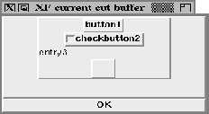
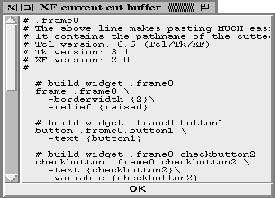

Calling this procedure pops up a dialog box containing the current cutbuffer. This can be in textual representation, or as a widget structure. If the parameter of the procedure is ``tree'', the cutbuffer is displayed as a widget tree:

Figure: The procedure XFProcEditShowCut (tree)
If the parameter is ``script'', the Tcl/Tk script is displayed:

Figure: The procedure XFProcEditShowCut (script)